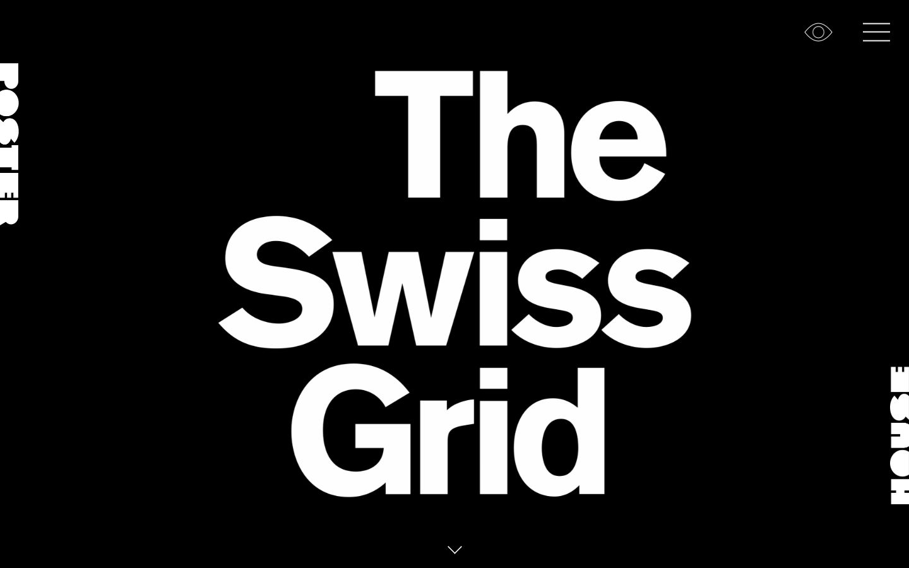

References / Website / 75
The Swiss Grid exhibition website
Poster House’s microsite for its Swiss Grid exhibition opens with the title in huge white Akzidenz-Grotesk on black.
- Source
- swissgrid.posterhouse.org
- Creator
- Poster House
- Style
- International Typographic Style (agent-proposed, not yet reviewed by a person)
- Moods
- Bold, stark, graphic
- Evidence
- Captured with
tools/capture.mjs(headless Chrome, 1440 × 900) on 25 September 2026 and inspected. The screenshot shows the first viewport; the measurement covers up to four screens. - Reviewed
- Rights
- Third-party work, stored with credit for commentary. License: unverified. Rights policy
Observed
- The page is black.
- The title “The Swiss Grid” fills most of the screen in three lines of very large white grotesque type. The block of three lines sits in the middle of the page.
- The word POSTER runs vertically down the top left edge and HOUSE runs vertically up the bottom right edge, in heavy white capitals.
- A thin eye icon and a three-line menu icon sit at the top right. A thin down arrow sits at the bottom center.
Why it belongs
The measurement finds only akzidenz-grotesk, black and white, a size range of 8.1, and no centered text. The layout still reads as centered: the title block is centered with margins, which the type.centerShare metric does not see.
The museum name split across two edges is a poster device: it frames the page from two corners instead of sitting in a header.
Borrow
Split a short name across two opposite page edges, set vertically, to frame a full-screen title.
Measured
Machine-extracted by tools/extract-traits.js on . Full measurement.
- Type families
- akzidenz-grotesk (100%)
- Type scale ratio
- 1.52
- Median radius
- 0 px
- Mean chroma
- 0
- Palette
- #000000 96%
- #ffffff 3%
- #757575 0%
- #c9c9c9 0%
- #e00087 0%

